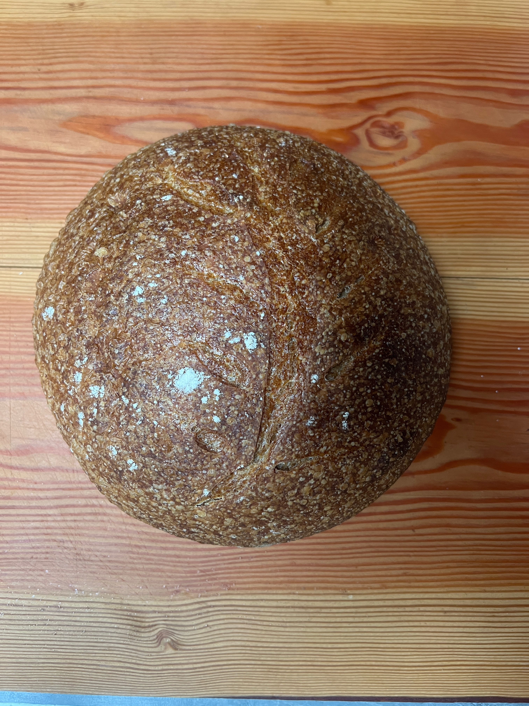

sourdough

description
a vegan sourdough bread recipe for a 2 lb loaf, with the dough made in a bread maker and baked in a crock pot.
time start to finish: 8.5-10.5 hours
ingredients
- 1 cup (240g) active sourdough starter
- 1 1/2 cups (360g) water
- 3 1/2 cups (420g) bread flour
- 1/2 cup (60g) whole wheat flour
- 2 tablespoons (30g) olive oil
- 2 teaspoons (10g) salt
instructions
-
Prepare the Dough in Bread Maker
- Add the sourdough starter, water, olive oil, bread flour, whole wheat flour, and salt to the bread maker pan
- Set the bread maker to the dough cycle and start. This will mix and knead the dough
-
First Rise
- Once the dough cycle is complete, leave the dough in the bread maker to rise until it
has doubled in size. This can take 3-4 hours, depending on the temperature and activity of your starter
-
Shape the Dough
- Remove the dough from the bread maker and place it on a lightly floured surface
- Shape it into a round loaf and let it rest for 20 minutes
-
Prepare the Crock Pot
- Line the crock pot with parchment paper
- Place the shaped dough into the crock pot
-
Second Rise
- preheat the oven to 400F
- Cover the crock pot with a lid and let the dough rise again until it has doubled in size, about 1-2 hours
-
Bake the Bread
- Set the crock pot to high and bake for about 2 hours. Check the internal temperature; it should be at least
200°F (93°C) when done
-
Cool the Bread
- Remove the bread from the crock pot and let it cool on a wire rack before slicing